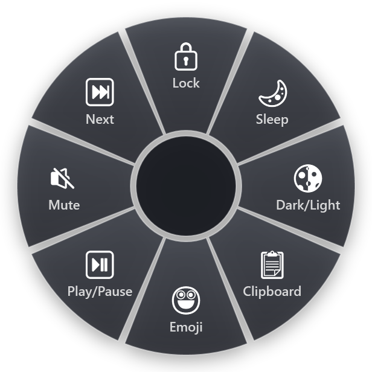

In Windows XP, 7 and 10 you could add a Quick Launch toolbar to the taskbar: a strip of small icons next to Start that opened programs, folders and files in one click. Many people kept it for decades. In Windows 11 it is gone, and there is no setting to bring it back.
Here is what happened, and four ways to launch things quickly on Windows 11 instead.
What happened to Quick Launch
Quick Launch was a taskbar toolbar, one of several you could switch on by right-clicking the taskbar in Windows 10. You could also create your own toolbar from any folder.
The Windows 11 taskbar was rebuilt from scratch rather than carried over from Windows 10, and taskbar toolbars were not part of the new one. That removed Quick Launch along with the Address, Links and custom folder toolbars. Microsoft's answer is pinning: put the apps you use on the taskbar or in Start.
Third-party tools exist that bring back a Quick Launch-style bar by modifying the taskbar. They can work, but they depend on how Windows draws the taskbar, so a Windows update can break them. The options below use features Windows supports.
1. Pin to the taskbar, then use Win+number
Pinning is the official replacement, and it has a keyboard shortcut most people never learn. The first ten pinned apps are numbered from left to right:
- Win+1 to Win+9 (and Win+0 for the tenth) open the pinned app in that position, or switch to it if it is already running.
- Win+Shift+1 starts a new window of that app.
- Win+Ctrl+1 switches to the last active window of that app.
- Win+Alt+1 opens its jump list, with recent files and pinned items.
Good for: your five to ten most-used programs. Put them in a fixed order and the number becomes muscle memory.
Limits: the taskbar holds programs, not folders or individual files (those go into each program's jump list), and ten numbers run out quickly.
Files and folders on the taskbar: jump lists
The taskbar does not hold folders or files directly, but each pinned app has a jump list: right-click its icon (or press Win+Alt and its number) to see recent and pinned items. To pin a file or folder there, drag it onto the app's taskbar icon, or hover it in the jump list and click the pin. File Explorer's jump list makes a decent home for the folders you open every day.
2. Pin to Start
Right-click any app and choose Pin to Start. Pinned apps sit at the top of the Start menu, and you can group them into folders by dragging one icon onto another.
Good for: a larger set of programs you open now and then.
Limits: it takes a click on Start (or Win), then another click. Not quick for things you open every hour.
3. Type to launch
Press Win and start typing the name: "exc" for Excel, "term" for Terminal. Press Enter. For many people this is the fastest built-in launcher, and it also finds settings and files. Microsoft PowerToys adds dedicated launchers: PowerToys Run (Alt+Space) and the newer Command Palette (Win+Alt+Space).
Good for: anything you can name in three letters.
Limits: you have to type, and search results can shift around as you install things, so the same letters do not always land on the same result.
4. A launcher ring under the cursor
The original appeal of Quick Launch was that your favourite things were always one click away, in the same place. A radial menu does the same, except that "the same place" moves with your pointer.
RadialDeck is the radial menu we make. Hold a hotkey (or a side mouse button), and a ring of up to eight slices appears under the pointer. Flick toward one and let go. A launcher ring can hold:
- Programs. If the program is already open, the slice can switch to it instead of starting a second copy.
- Folders and files. Your project folder, a spreadsheet you open every morning, a network share.
- Websites. The intranet, a dashboard, the ticket system.
- Store apps. Teams, WhatsApp, Spotify, Calculator and other packaged apps can be picked from the app list.

Because the ring opens wherever the pointer is, there is no trip to the corner of the screen. And because each item has a fixed direction, you stop reading icons after a few days: the terminal is "down", the project folder is "left".
Folders of their own
A slice can open a second ring, marked with ⋮. One "Projects" slice can hold eight project folders, one "Tools" slice eight utilities. The top level stays at eight, but you can reach up to three levels deep.
A different ring for each program
The same hotkey can open a different ring depending on the program in front. Your launcher ring appears on the desktop and in most programs, while Excel, Outlook or your browser get rings of their own actions.
Which one to use
You will probably end up with more than one:
- Win+number for the five programs you live in.
- Type to launch for the long tail.
- A launcher ring for folders, files, websites and the things that never fit on the taskbar.
RadialDeck is free for two rings, enough for a launcher ring and one more. Pro (24 € a year, VAT included, 14-day trial) adds unlimited rings and rings per program. Get it from the Microsoft Store.
Try it in RadialDeck
Free for two rings, with a 14-day trial of everything in Pro. Windows 10 and 11, from the Microsoft Store.